极客时间-ElasticSearch
课程实录
(08)Logstash安装与导入数据
Movies示例数据集
ES Mapping：
1 | PUT movies |
logstash.conf
1 | input { |
(09)基本概念：索引、文档和REST API
文档(Document)
- Elasticsearch是面向文档的，文档是所有可搜索数据的最小单位
- 日志文件中的日志项
- 一本电影的具体信息 / 一张唱片的详细信息
- MP3播放器里的一首歌 / 一篇PDF文档中的具体内容
- 文档会被序列化成JSON格式，保存在Elasticserach中
- JSON对象由字段组成
- 每个字段都有对应的字段类型（字符串、数值、布尔、日期、二进制、范围类型）
- 每个文档都有一个Unique ID
- 你可以自己指定ID
- 或者通过Elasticsearch自动生成
JSON文档
- 一篇文章包含了一系列的字段，类似数据库表中的一条记录。
- JSON文档，格式灵活，不需要预先定义格式
- 字段的类型可以指定或者通过Elasticsearch自动推算
- 支持数组/支持嵌套
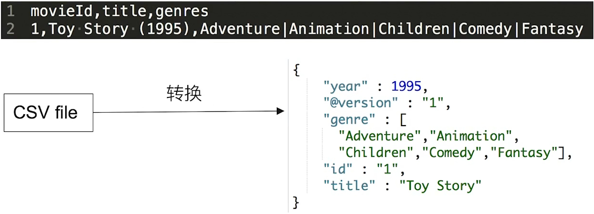
注：在课程中，通过一个CSV源文件，再经过logstash处理后输出到ES中到文档存储格式
文档的元数据
一篇文档示例
1 | { |
元数据用于标注文档的相关信息
- _index - 文档所属的索引名
- _type - 文档所属的类型名
- _id - 文档唯一id
- _source - 文档的原始JSON数据
- _all - 整合所有自断内容到该字段，从7.0开始已被废除
- _version - 文档到版本信息：大并发读写的时候，会很有用
- _score - 相关性打分
索引
Index - 所以是文档的容器，是一类文档的结合
- Index体现了逻辑的概念：每个索引都有自己的Mapping定义，用于定义包含的文档的字段名和字段类型。
- Shard体现了物理空间的概念：索引中的数据分散在Shard分片上
索引中可以设置Mapping与Settings
- Mapping定义文档字段的类型
- Setting定义不同到数据分布：要用多少分片，数据最后是怎么分布到
例如，上面那个电影信息的文档的索引结构就可以是如下：
1 | { |
索引的不同语意
- 名词：一个Elasticsearch集群中，可以创建很多个不同的索引
- 动词：保存一个文档到Elasticsearch的过程也叫索引（indexing）
- ES中，创建一个倒排索引到过程
- 通用型的名词：一个B树索引，一个倒排索引
Type字段
在7.0之前，一个Index可以设置多个Types
从6.0开始，Type已经被废弃。
从7.0开始，一个索引只能创建一个 type - “_doc”
与关系型数据库抽象类比
整体上类比的可能不是那么恰当
- 关系型数据库中表的概念 -> ES中的索引
- 关系型数据库中每一条记录 -> ES中的文档
- 关系型数据库中的每个字段 -> ES文档中的一个字段
REST API
方便各种语言整合调用，只需要直接通过调用REST API即可
查看每个索引占用的内存：
1 | GET /_cat/indices?v&h=i,tm&s=tm:desc |
(10)基本概念：节点、集群、分片及副本
分布式系统的可用性与扩展性
- 高可用性
- 服务可用性 - 允许有节点停止服务
- 数据可用性 - 部分节点丢失，不会丢失数据
- 可扩展性
- 请求量提升 / 数据的不断增长（将数据分布到所有节点上）
分布式特性
- Elasticsearch的分布式架构的好处
- 存储水平扩容
- 提供系统的可用性，部分节点停止服务，整个集群的服务不受影响
- Elasticsearch的分布式架构
- 不同的集群可以通过不同的名字来区分，默认名字：“elasticsearch”
- 通过配置文件修改，或者在命令行中直接指定：-E cluster.name=geektime进行设定
- 一个集群可以有一个或者多个节点
节点
- 一个节点就是一个Elasticsearch的实例
- 本质上就是一个JAVA进程
- 一台机器可以运行多个ES进程，但是生产环境一般建议一台机器上只运行一个
- 每一个节点都有名字，通过配置文件配置或者启动的时候指定：-E node.name=node1
- 每个节点在启动之后会分配一个UID，保存在data目录下
Master-eligible nodes 与 Master Node
- 每个节点启动后，默认就是一个Master-eligible节点
- 可以设置node.master: false禁止
- Master-eligible节点可以参加选主流程成为最后的Master节点
- 当第一个节点启动的时候，它会将自己选举成Master节点
- 每个节点上都保存了集群的状态，只有Master节点才能修改集群的状态信息
- 集群状态（Cluster State），维护了一个集群中，必要的信息
- 所有的节点信息
- 所有的索引和其相关的Mapping与Setting信息
- 分片路由信息
- 任意节点都能修改信息会导致数据的不一致性
- 集群状态（Cluster State），维护了一个集群中，必要的信息
Data Node 与 Coordinating Node
- Data Node
- 可以保存数据的节点，叫做Data Node。负责保存分片数据。在数据扩展上起到了至关重要的作用，例如在集群上无法存数据到时候，可以增加数据节点来解决这一问题。
- Coordinating Node
- 负责接受Client的请求，将请求分发到合适到节点，最终把结果汇集到一起
- 每个节点默认都起到了Coordinating Node到职责
其它类型的节点
- Hot & Warm Node
- 不同硬件配置的Data Node，用来实现Hot & Warm架构，降低集群部署的成本
- Machine Learning Node
- 负责跑机器学习的Job，比如用来做异常检测
- Tribe Node
- （5.3开始使用Cross Cluster Search）Tribe Node连接到不同到ES集群，并且支持将这些集群当成一个单独的集群处理。
分片（Primary Shard & Replica Shard）
- 主分片，用于解决数据水平扩展的问题。通过主分片，可以将数据分布到集群内的所有节点之上
- 一个分片是一个运行的Lucene实例
- 主分片数在索引创建时指定，后续不允许修改，除非Reindex
- 副本，用于解决数据高可用的问题，分片是主分片的拷贝
- 副本分片数，可以动态调整
- 增加副本数，还可以在一定程度上提高服务的可用性（读取到吞吐）
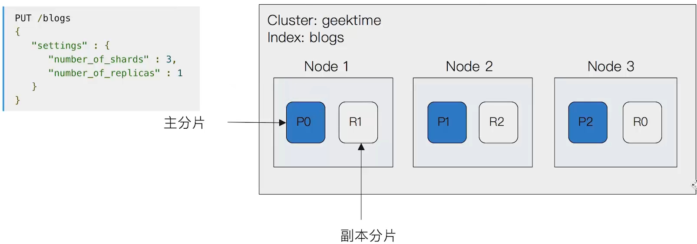
分片的设定
对于生产环境中的分片设定，需要提前做好容量规划，
- 如果分片数量设置过小
- 导致后续无法增加节点实现的水平扩展
- 单个分片的数据量太大，导致数据重新分配耗时
- 分片数设置过大，7.0开始，默认主分片设置成1，解决了over-sharding的问题
- 影响搜索结果的相关性打分，影响统计结果的准确性
- 单个节点上过多的分片，会导致资源浪费，同时也会影响性能
文档的CRUD
注：注意Index与Update之间的区别
- Type名，约定都用_doc
- Create - 如果ID已经存在，会失败
- Index - 如果ID不存在，创建新的文档。否则，先删除现有的文档，再创建新的文档，版本会增加
- Update - 文档必须已经存在，更新只会对相应字段做增量修改


BULK API
- 支持在一次API调用中，对不同的索引进行操作
- 支持四种类型操作：CRUD
- 可以在URI中指定Index，也可以在请求的Payload中进行
- 操作中单条操作失败，并不会影响其他操作
- 返回结果包含了每一条操作执行的结果
批量读取mget与批量查询msearch
批量读取：
1 | GET /_mget |
批量查询：
1 | POST kibana_sample_data_ecommerce/_msearch |
(12)倒排索引介绍
在搜索引擎中，正排索引是一个文档ID到文档内容到关联，而倒排索引恰恰相反，就是一个单词到文档ID关联的关系。例如：
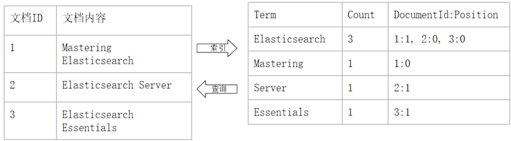
倒排索引的核心组成
倒排索引通常包含两个部分：
- 单词词典（Term Dictionary），记录所有文档的单词，记录单词到倒排列表的关联关系
- 单词词典一般比较大，可以通过B+树或者哈希链算法实现，以满足高性能的插入与查询
- 倒排列表（Posting List），记录了单词对应的文档结构，由倒排索引项组成
- 倒排索引项（Posting）
- 文档ID
- 词频TF - 该单词在文档中出现的次数，用于相关性评分
- 位置（Position） - 单词在文档中分词的位置，用于语句搜索（phrase query）
- 偏移（Offset） - 记录单词的开始和结束位置，实现高亮显示。
- 倒排索引项（Posting）
在ES中的倒排索引：
JSON文档中的每个字段，都有自己的倒排索引，可以指定对某些字段不做索引：
- 优点：节省存储空间
- 缺点：字段无法被搜索
(13)通过Analyzer进行分词
Analysis 与 Analyzer
- Analysis - 文本分析是把全文本转化一系列单词（term / token）的过程，也叫分词
- Analysis是通过Analyzer（分词器）来实现的
- 可以通过ES内置的分词器，或者按需定制化分词器
- 除了在数据写入时转换词条，匹配Query语句时候也需要使用相同的分词器对查询语句进行分析
Analyzer的组成
分词器是专门处理分词的组件，Analyzer由三部分组成
- Character Filters（针对原始文本处理，例如去除html标签）
- Tokenizer（按照规则切分单词）
- Token Filter（将切分的单词进行加工，小写，删除Stopwords，增加同义词）
处理流程示例如下图所示：

(14)Search API概览
指定查询的索引
查询响应：
- took 花费的时间
- total 符合条件的总文档数
- hits 结果集，默认前10个文档
- _index: 索引名
- _id: 文档的ID
- _score: 相关度评分
- _source: 文档原始信息
搜索的相关性Relevance
- 搜索是用户和搜索引擎的对话
- 用户关心的是搜索结果的相关性
- 是否可以找到相关的内容
- 有多少不相关的内容被返回了
- 文档的打分是否合理
- 结合业务需求，平衡结果排名
衡量相关性
Information Retrieval
- Precision(查准率) - 尽可能返回较少的无关文档
- Recall(查全率) - 尽量返回较多的相关文档
- Ranking - 是否能够按照相关度进行排序
(15)URI Search详解
顾名思义，通过URI query实现搜索，例如：
1 | GET /movies/_search?q=2012&df=title&sort=year:desc&from=0&size=10&timeout=1s |
上述命令中：
- q指定查询语句，使用Query String Syntax
- df默认字段，不指定时，会对所有字段进行查询
- Sort排序 / from和size用于分页
- Profile可以查看查询是如何被执行的
Query String Syntax
- 指定字段 v.s 泛查询
- q = title:2012 / q=2012
- Term v.s Phrase
- Beautiful Mind 等效于 Beautiful OR Mind
- “Beautiful Mind”，等效于Beautiful AND Mind。 Phrase查询，还要求前后顺序保持一致。
- 分组与引号
- Term Query: title:(Beautiful AND Mind)
- Phrase Query: title=”Beautiful Mind”
- 布尔操作
- AND | OR | NOT 或者 && | || | !
- 所有布尔操作符必须大写
- 例如：title:(matrix NOT reloaded)
- AND | OR | NOT 或者 && | || | !
- 分组
- 表示 must
- 表示 must not
- title:(+matrix -reloaded)
- 范围查询
- 区间表示:[] 闭区间, {}开区间
- year:{2019 TO 2018}
- year:[* TO 2018]
- 区间表示:[] 闭区间, {}开区间
- 算数符号
- year:>2010
- year:(>2010 && <= 2018)
- year:(+>2010 +<=2018)
- 通配符查询（通配符查询效率低，占用内存大，不建议使用。特别放在最前面）
- ？表示1个字符，*代表0或者多个字符
- title:mi?d
- title:be*
- ？表示1个字符，*代表0或者多个字符
- 正则表达式
- title:[bt]oy
- 模糊匹配与近似查询
- title:befutifl~1
- title:”Loard Rings”
2 // 近似匹配，如果不加2则是需要强匹配的Phrase Query
查询示例：
1 | // TermQuery示例 |
(16)Request Body 与 Query DSL简介
总体上，建议使用Request Body查询
- 将查询语句通过HTTP Request Body发送给ES
- Query DSL
1
2
3
4
5
6
7POST /movies,404_idx/_search?ignore_unavailable=true
{
"profile": "true",
"query": {
"match_all": {}
}
}
脚本字段
在Request Body中使用painless字段，组合查询出新的字段
1 | GET kibana_sample_data_ecommerce/_search |
(17)Query String 与 Simple Query String查询
1 |
|
(18)Dynamic Mapping和常见字段类型
- Mapping类似数据库中的schema定义，作用如下：
- 定义索引中的字段名称
- 定义字段的数据类型，例如字符串，数字，布尔等等
- 字段，倒排索引的相关配置（Analyzed or Not Analyzed, Analyzer）
- Mapping会把JSON稳定映射成为Lucene所需要的扁平格式
- 一个Mapping属于一个索引的Type
- 简单类型
- Text / Keyword
- Date
- Integer / Floating
- Boolean
- IPv4 & IPv6
- 复杂类型 - 对象和嵌套对象
- 对象类型 / 嵌套类型
- 特殊类型
- geo_point & geo_shape / percolator
什么是Dynamic Mapping
- 在写入文档的时候，如果索引不存在，会自动创建索引
- Dynamic Mapping的机制，使得我们无需手动定义Mapping。ES会自动根据稳定信息，推算出字段的类型
- 但是有时候会推算的不对，例如地理位置信息
- 当类型如果设置不对时，会导致一些功能无法正常运行，例如Range查询
类型的自动识别

能否改mapping的字段类型
分两种情况：
- 新增字段：
- Dynamic设置为true时，一旦有新增字段的文档写入，mapping也同时被更新
- Dynamic设置为false时，mapping不会被更新，心中字段的数据无法被搜索
- Dynamic
- 如果希望改变字段类型，必须ReindexAPI，重建索引
因为： - 如果修改了字段的数据类型，会导致已被索引的属性无法被搜索
- 但是如果是新增的字段，就不会有这样的影响
自定义Mapping的一些建议
- 可以参考API手册，纯手写
- 为了减少输入工作量，减少出错的概率，可以依照以下步骤
- 创建一个临时的index，写入一些样本数据
- 通过访问Mapping API获得该临时文件的动态Mapping定义
- 修改后用，使用新的配置来创建索引
- 删除临时索引
index优化建议
- 四种不同级别的Index Options配置，可以控制倒排索引记录的内容
- docs - 记录doc id
- freqs - 记录doc id和term frequencies
- positions - 记录doc id / term frequencies / term position
- offsets - 记录doc id / term frequencies / term position / character offects
- Text类型默认记录positions，其它默认为docs
- 记录内容越多，占用存储空间越大
- null_value的属性使用：如果需要搜索，但是可能没有有效值，可以设置该属性为null以实现对null值的索引
(20)多字段类型
多字段特性，举例：
- 厂商的名字实现精确匹配
- 增加一个keyword字段
- 使用不同的analyzer
- 不同语言
- pinyin字段的搜索
- 还支持为搜索和索引指定不同的analyzer
例如：
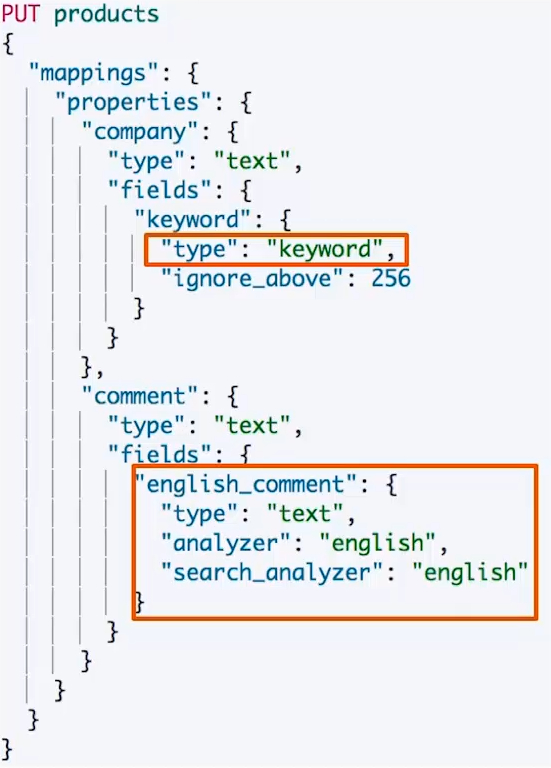
精确值(Exact Values) 与 全文本(Full text)
精确值：包括数字、日期、具体一个字符串（例如“Apple Store”）
+ ES中的keyword
+ 与全文本中最大的区别就是：精确值不需要被做分词的处理
全文本：非结构化的文本数据
+ ES中的text
自定义分词
当自带的分词器无法满足时，可以自定义分词器，通过组合不同的组件来实现：
- Character Filters
- Tokenizer
- Token Filter
Character Filters
在Tokenizer处理之前对文本进行特殊的处理，例如增加删除及替换字符。可以配置多个Character Filters。最终会影响Tokenizer的position和offset信息。
一些自带的Character Filters - HTML strip - 去除HTML标签，例如在网络爬虫数据之后，就可以把一些不必要的标签给过滤了
- Mapping - 字符串替换
- Pattern replace - 正则匹配替换
Tokenizer
将原始的文本按照一定的规则，切为分词（term or token）
ES内置的Tokenizers： - whitespace：空白符
- standard：
- uax_url_email
- pattern：正则
- keyword：不做任何处理，直接把输入的字符串当做一个keyword输出
- path hierarchy
也可以用Java插件开发，实现自己的TokenizerToken Filter
将Tokenizer输出的单词（term），进行增加、修改、删除
自带的Token Filters： - Lowercase
- stop：过滤停用词
- synonym（添加近义词）
设置一个Custom Analyzer
例如：
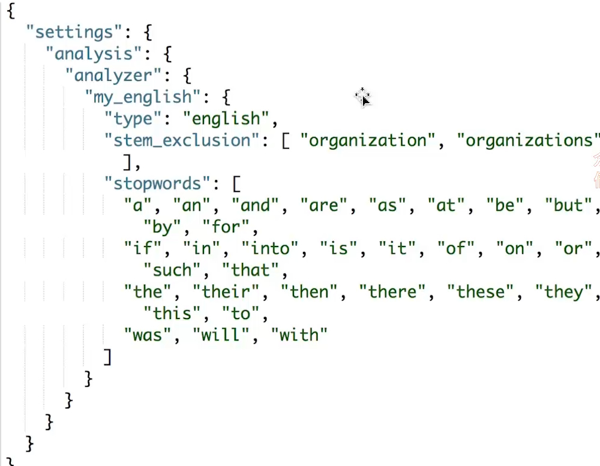
课程示例
1 | // 过滤html标签 |
自定义分词索引示例
1 | // 自定义分词器索引 |
(21)Index Template和Dynamic Template
什么是Index Template
Index Templates：帮助按照一定的模板自动设定Mappings和Settings，并按照一定的规则，自动匹配到新创建的索引之上。
- 模板仅在一个索引被新创建时，才会产生作用。修改模板不会影响已创建的索引
- 可以设定多个索引模板，这些设置会被“merge”在一起
- 可以指定“order”的数值，控制“merging”的过程
两个自动创建的示例：1
2
3
4
5
6
7
8
9
10
11
12
13
14
15
16
17
18
19
20
21
22
23
24
25PUT _template/template_default
{
"index_patterns": ["*"],
"order" : 0,
"version": 1,
"settings": {
"number_of_shards": 1,
"number_of_replicas":1
}
}
PUT /_template/template_test
{
"index_patterns" : ["test*"],
"order" : 1,
"settings" : {
"number_of_shards": 1,
"number_of_replicas" : 2
},
"mappings" : {
"date_detection": false,
"numeric_detection": true
}
}Index Template的工作方式
当一个索引被新创建时 - 应用ES默认的settings和mappings
- 应用order数值低的Index Template中的设定
- 应用order高的Index Template中的设定，之前的设定会被覆盖
- 应用创建索引时，用户指定的Settings和Mappings，并覆盖之前模板中的设定
什么是Dynamic Template
根据ES识别的数据类型，结合字段名称，来动态设定字段类型，例如：
- 所有的字符串类型都设定成keyword，或者关闭keyword字段
- is开头的字段都设置成boolean
- long开头的都设置成long类型
课程代码示例
1 | #Dynaminc Mapping 根据类型和字段名 |
相关阅读
- Index Templates https://www.elastic.co/guide/en/elasticsearch/reference/7.1/indices-templates.html
- Dynamic Template https://www.elastic.co/guide/en/elasticsearch/reference/7.1/dynamic-mapping.html
(22)ES聚合分析简介
什么是聚合(Aggregation)
- ES除搜索以外，提供的针对ES数据进行统计分析的功能
- 实时性高
- Hadoop有时候统计数据可能需要一天的时间(T+1)
- 通过聚合，我们会得到一个数据的概览，是分析和总结全套的数据，而不是寻找单个稳定
- 比如：沙尖咀和香港岛的客房数量
- 不同的价格区间，可预订的经济型酒店和五星级酒店的数量
- 高性能，只需要一条语句，就可以从ES中得到分析结果
- Bucket Aggregation - 一些列满足特定条件的文档的集合，即数据桶
- Metric Aggregation - 一些数学运算，可以对文档字段进行统计分析
- Pipeline Aggregation - 对其他的聚合结果进行二次聚合
- Matrix Aggregation - 支持对多个字段的操作并提供一个结果矩阵
Bucket & Metric
Metric类比于SQL中的一系列统计方法
Bucket类比于SQL中的一系列的Group
Bucket示意图：
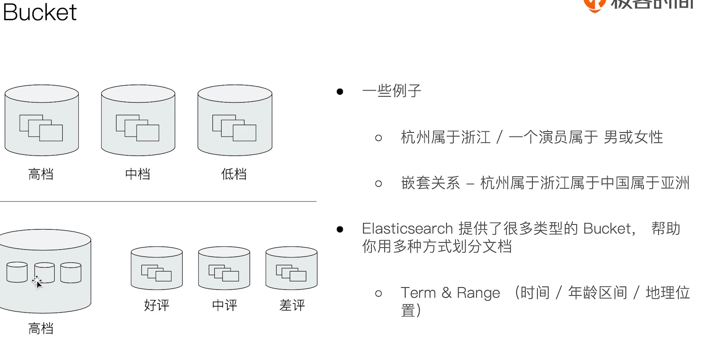
Metric： - Metric会基于数据集计算结果，除了支持在字段上进行计算，同样也支持在脚本（painless script）产生的结果之上进行计算
- 大多数Metric是数学计算，仅输出一个值
- min / max / sum / avg / cardinality
- 部分metric支持输出多个数值
- stats / percentiles / percentile_ranks
一个Bucket的例子
输出结果1
2
3
4
5
6
7
8
9
10
11
12# 查看航班目的地的统计信息
GET kibana_sample_data_flights/_search
{
"size": 0,
"aggs": {
"flight_dest": {
"terms": {
"field": "DestCountry"
}
}
}
}1
2
3
4
5
6
7
8
9
10
11
12
13
14
15
16
17
18
19
20
21
22
23
24
25
26
27
28
29
30
31
32
33
34
35
36
37
38
39
40
41
42
43
44
45
46
47
48
49
50
51
52
53
54
55
56
57
58
59
60
61
62
63
64
65
66
67
68# 输出结果
{
"took" : 31,
"timed_out" : false,
"_shards" : {
"total" : 1,
"successful" : 1,
"skipped" : 0,
"failed" : 0
},
"hits" : {
"total" : {
"value" : 10000,
"relation" : "gte"
},
"max_score" : null,
"hits" : [ ]
},
"aggregations" : {
"flight_dest" : {
"doc_count_error_upper_bound" : 0,
"sum_other_doc_count" : 3187,
"buckets" : [
{
"key" : "IT",
"doc_count" : 2371
},
{
"key" : "US",
"doc_count" : 1987
},
{
"key" : "CN",
"doc_count" : 1096
},
{
"key" : "CA",
"doc_count" : 944
},
{
"key" : "JP",
"doc_count" : 774
},
{
"key" : "RU",
"doc_count" : 739
},
{
"key" : "CH",
"doc_count" : 691
},
{
"key" : "GB",
"doc_count" : 449
},
{
"key" : "AU",
"doc_count" : 416
},
{
"key" : "PL",
"doc_count" : 405
}
]
}
}
}
- stats / percentiles / percentile_ranks
一个Metrics示例
1 | #查看航班目的地的统计信息，增加平均，最高最低价格 |
输出结果
1 | { |
(24)基于词项(Term)和基于全文的搜索
基于Term的查询
- Term的重要性
- Term是表达语义的最小单位。搜索和利用统计语言模型进行自然语言处理都需要处理Term。
- 特点
- Term Level Query:
- Term Query
- Range Query
- Exists Query
- Prefix Query
- Wildcard Query
- 在ES中，Term查询，对输入 不做分词 会将输入作为一个整体，在倒排索引中查找准确的词项，并且使用相关度算分公式为每个包含该词项的文档进行 相关度算分
- 所以，在Term查询中，如果需要精确匹配，在Mapping的设置中，可以将这个字段设置成keyword字段，查询的时候指定keyword就可以精确匹配
- 可以通过Constant Score将查询 转换成一个Filtering，避免算法，并利用缓存，提高性能
- Term Level Query:
Term查询示例
1 | DELETE products |
复合查询 - Constant Score 转为Filter
- 将Query转成Filter，忽略TF-IDF计算，避免相关性算分的开销
- Filter可以有效利用缓存
例如上述示例中：1
2
3
4
5
6
7
8
9
10
11
12
13
14
15#
POST /products/_search
{
"explain": true,
"query": {
"constant_score": {
"filter": {
"term": {
"productID.keyword": "XHDK-A-1293-#fJ3"
}
}
}
}
}
基于全文的查询
- 基于全文本查找
- Match Query
- Match Phrase Query
- Query String Query
- 特点
- 索引和搜索时都会进行分词，查询字符串先传递到一个合适的分词器，然后生成一个供查询的词项列表
- 查询的时候，先对输入的查询进行分词，然后每个词项逐个进行底层查询，最终将结果进行合并。并为每个文档生成一个算分。例如：查“Matrix reloaded”，实际会查到包括Matrix或者reload的所有结果
拆解步骤例如：

(25)结构化搜索
结构化数据
- 结构化搜索（Structured search）是指对结构化数据的搜索
- 日期、布尔类型和数字都是结构化的
- 文本也可以是结构化的
- 如彩色笔可以有离散的颜色集合：红（read）、绿（green）、蓝（blue）
- 一个博客可能被标记了标签，例如，分布式（distributed）和搜索（search）
- 电商网站上的商品都有UPCs（通用产品码）或者其它的唯一标识，它们都需要遵从严格规定的、结构化的格式。
ES中的结构化搜索
- 布尔、时间，日期和数字这类结构化数据：有精确的格式，我们可以对这些格式进行逻辑操作。包括比较数字或时间的范围，或判定两个值的大小。
- 结构化的文本可以做精确匹配或者部分匹配
- Term查询 | Prefix前缀查询
- 结构化结果只有“是”或“否”两个值
- 根据场景需要，可以决定结构化搜索是否需要打分（constant score）
课程代码示例
1 | #结构化搜索，精确匹配 |
(26)搜索相关性算法
相关性和相关性算分
相关性-Relevance
- 搜索的相关性算分，描述了一个文档和查询语句匹配的程度。ES会对每个匹配查询条件的结果进行算分（_score）
- 打分的本质是排序，需要把符合用户需求的稳定排在前面。ES5之前，默认的相关性算法采用TF-IDF，现在采用BM25
词频TF
- Term Frequency: 检索词在一篇文档中出现的频率
- 检索词出现的次数除以文档的总字数
- 度量一条查询和结果文档相关性的简单方法：简单将搜索中每一个词的TF进行相加
- 例如：TF(区块链) + TF(的) + TF(应用)
- Stop Word
- “的”在文档中出现了很多次，但是对贡献相关度几乎没有作用，不应该考虑这些词的TF
逆文档频率IDF
- DF：检索词在所有文档中出现的频率，例如：
- “区块链”在相对比较少的文档中出现
- “应用”在相对比较多的文档中出现
- “Stop word”在大量的文档中出现
- Inverse Document Frequency: 简单说 = log(全部文档数 / 检索词出现过的文档总数)
- TF-IDF 本质上就是讲TF求和变成了加权求和，例如：
- TF(区块链) * IDF(区块链) + TF() * IDF(的) + TF(应用) * IDF(应用)
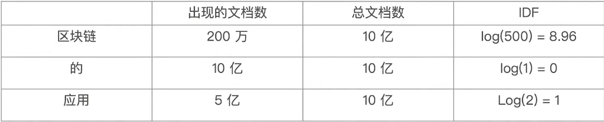
- TF(区块链) * IDF(区块链) + TF() * IDF(的) + TF(应用) * IDF(应用)
TF-IDF的概念
- TF-IDF被公认为是信息检索领域最重要的发明
- 除了在信息检索，在文献分类和其他相关领域有着非常广泛的应用
- IDF的概念，最早是剑桥大学“斯巴克·琼斯”提出
- 1972年，“关键词特殊性的统计解释和它在文献检索中的应用”
- 但是没有从理论上解释IDF应该是用log(全部文档数 / 检索词出现过的文档总数)，而不是其它函数。也没有做进一步的研究
- 1970，1980年代萨尔顿和罗宾逊，进行了进一步的证明和研究，并用了香农的信息论做了证明
- 现代搜索引擎，对TF-IDF进行了大量细微的优化
在Lucene中的TF-IDF评分公式：
boosting-权重提升因子
BM25
- 从ES5开始，默认算法改为BM25
- 和经典的TF-IDF相比，当TF无限增加时，BM25算分会趋于一个数值
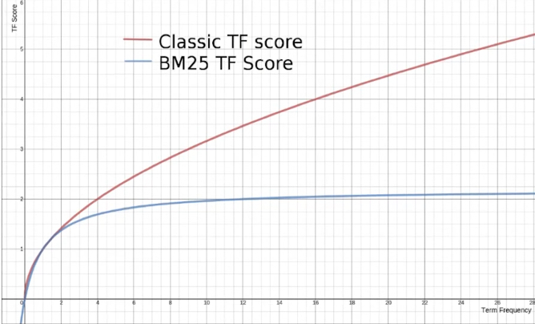
定制Similarity
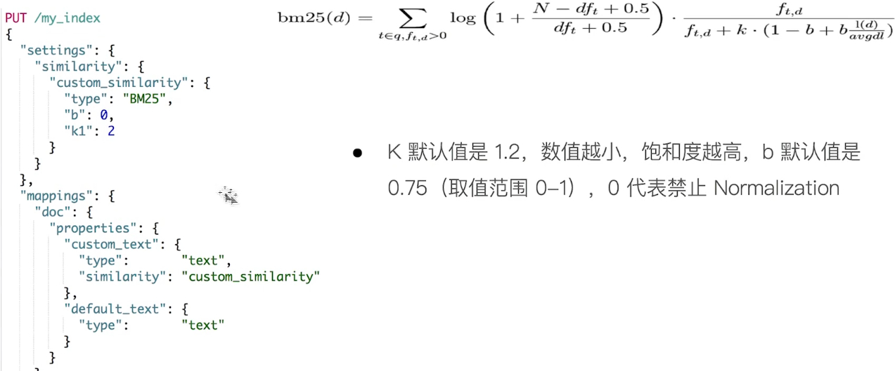
可以在查询中打开explain开关，开关注算分步骤
Boosting Relevance
- Boosting是控制相关度的一种手段
- 索引，字段或查询子条件
- 参数boost的含义
- 当boost > 1时，打分的相关度相对性提升
- 当0 < boost < 1时，打分的权重相对性降低
- 当boost < 0时，贡献负分
相关阅读
(27)Query & Filtering与多字符串多字段查询
Query Context & Filter Context
- 高级搜索的功能：支持多项文本输入，针对多个字段进行搜索
- 搜索引擎一般也提供基于时间，价格等条件的过滤
- 在ElasticSearch中，有Query和Filter两种不同的Context
- 假设要搜索一本电影，包含了以下条件：
- 评论中包含了Guitar，用户打分高于3分，同时上映日期要在1993与2000年之间
- 这个搜索其实包含了3段逻辑，针对不同的字段：
- 评论字段中要包含Guitar/用户评分大于3/上映日期需要在给定的范围
- 同时包含这三个逻辑，并且有比较好的性能？
- 一个bool查询，是一个或者多个查询子句的组合
- 总共包括4种子句。其中2种会影响算分，2种不影响算分
- 相关性并不只是全文本检索的专利。也适用于 yes | no的子句，匹配的子句越多，相关性评分越高。如果多条查询子句被合并为一条复合查询语句，比如bool查询，则每个查询子句计算得出的评分会被合并到总的相关性评分中。
搜索关键词 功能释义 must 必须匹配。贡献算分 should 选择性匹配。贡献算分 must_not Filter Context查询子句，必须不能匹配 filter Filter Context必须匹配，但是不贡献算分
bool查询示例
1 | POST /products/_search |
相关度算分影响
查询语句的结构，会对相关度算分产生影响
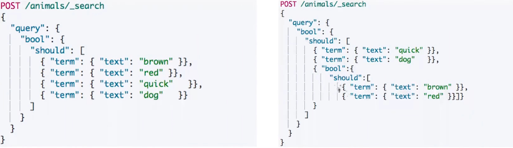
- 同一层级下的竞争字段，具有相同的权重
- 通过嵌套bool查询，可以改变对算分的影响
控制算分字段boosting
- Boosting是控制相关度的一种手段
- 索引、字段或者查询子条件
- 参数Boosting的含义
- 当boost > 1时，打分的相关度相对性提升
- 当0 < boost < 1时，打分的权重相对性降低
- 当0 < boost时，贡献负分
boosting示例
1 | DELETE blogs |
(28)单字符串多字段查询Disjunction Max Query
查询示例
1 | PUT /blogs/_doc/1 |
假设需要查询下面一个场景：
- 博客标题
- 文档1中出现“Brown”
- 博客内容
- 查询should语句中的两个查询
- 文档2虽然包含，但是title不包含
- 加和两个查询的评分
- 乘以匹配语句的总数
- 除以所有语句的总数
Disjunction Max Query查询
- 上面例子中，title和body相互竞争
- 不应该将分数简单叠加，而是应该找到 单个最佳匹配的字段的评分
- Disjunction Max Query
- 将任何与任一查询匹配的文档作为结果返回。采用字段上最匹配的评分最终评分返回
查询示例
1 | POST blogs/_search |
Tie Breaker参数调整
- 获得最佳匹配语句的评分
- 将其它匹配语句的评分与tie_breaker相乘
- 将以上评分求和并规范化
(29)单字符串多字段查询Multi Match
三种场景
- 最佳字段（Best Fields）
- 当字段之间相互竞争，又相互关联。例如title和body这样的字段。评分来自最匹配字段
- 多数字段（Most Fields）
- 处理英文内容时：一种常见的手段是，在主字段（English Analyzer），抽取词干，加入同义词，以匹配更多的文档。相同的文本，加入字段（Standard Analyzer），以提供更加精准的匹配。其他字段作为匹配文档提高相关度的信号。匹配字段越多则越好。
- 混合字段（Cross Fields）
- 对于某些实体，例如人名，地址，图书信息。需要在多个字段中确定信息，单个字段只能作为整体的一部分。希望在任何这些列出的字段找到尽可能多的词。
Multi Match Query
示例查询样例：
1 | POST blogs/_search |
- Best Fields 是默认类型，可以不用指定
- Minimum should match 等参数可以传递生成的Query中
跨字段搜索
1 | PUT address/_doc/1 |
- 支持使用Operator
- 与copy_to相比，其中一个优势就是它可以在搜索时为单个字段提升权重。
(30)多语言及中文分词与检索
自然语言与查询Recall
- 当处理人类自然语言时，有些情况，尽管搜索和原文不完全匹配，但是希望搜到一些内容
- 例如：Quick brown fox 和 Fast brown fox / Jumping fox 和 Jumped foxes
- 一些可以采取的优化措施：
- 归一化词元：清除变音符号，如rôle的时候也会匹配role
- 抽取词根：清除单复数和时态的差异
- 包含同义词
- 拼写错误：拼写错误，或者同音异形词
混合多语言挑战
- 一些具体的多语言场景
- 不同的索引使用不同的语言 / 同一个索引中，不同的字段使用不同的语言 / 一个文档的一个字段内混合不同的语言
- 混合语言存在的一些挑战
- 词干提取：以色列文档，可能包含了希伯来语，阿拉伯语，俄语和英语
- 不正确的文档频率 - 英文为主的文章中，德文算分高（稀有）
- 需要判断用户搜索时使用的语言，语言识别（Compact Language Detector）
- 例如：根据语言，查询不同的索引
分词挑战
- 英文分词：You’re分成一个还是多个？
- 中文分词：
- 分词标准：哈工大标准中，姓和名分开。HanLP是在一起的。具体情况需指定不同的标准
- 歧义（组合型歧义，交集型歧义，真歧义）
- 中华人民共和国/美国会通过对台售武法案/上海仁和服装厂
(52)Ingest Pipeline & Painless Script
背景
当遇到一个输入文档中，某个输入字段不是正常的字符串，而是一个带有逗号的数组，此时需要对对应字段处理并进行Aggregation操作。
例如下面的：tags
1 | PUT tech_blogs/_doc/1 |
Ingest Node
ElasticSearch 5.0之后，引入的一种新的节点类型。默认配置下，每个节点都是Ingest Node
特点：
- 具有预处理数据的能力，可以拦截Index或Bulk API的请求
- 对数据进行转换，并重新返回给Index或Bulk API
- 无需Logstash，就可以进行数据预处理，例如：

Ingest Node v.s Logstash

Painless简介
- 自ElasticSearch 5.X后引入，专门为ElasticSearch设计，扩展了Java的语法
- 6.0 开始，ES只支持Painless。Groovy，JavaScript和Python都不再支持
- Painless支持所有Java的数据类型及Java API子集
- Painless Script具备以下特性：
- 可以对文档字段进行加工处理：
- 更新或删除字段，处理数据聚合操作
- Script Field: 对返回的字段提前进行计算
- Function Score: 对文档的算分进行处理
- 可以在Ingest Pipeline中执行搅拌
- 在Reindex API，Update By Query时，对数据进行处理
示例
1 | PUT tech_blogs/_doc/1 |
注意：此种编译脚本编译开销还是比较大的
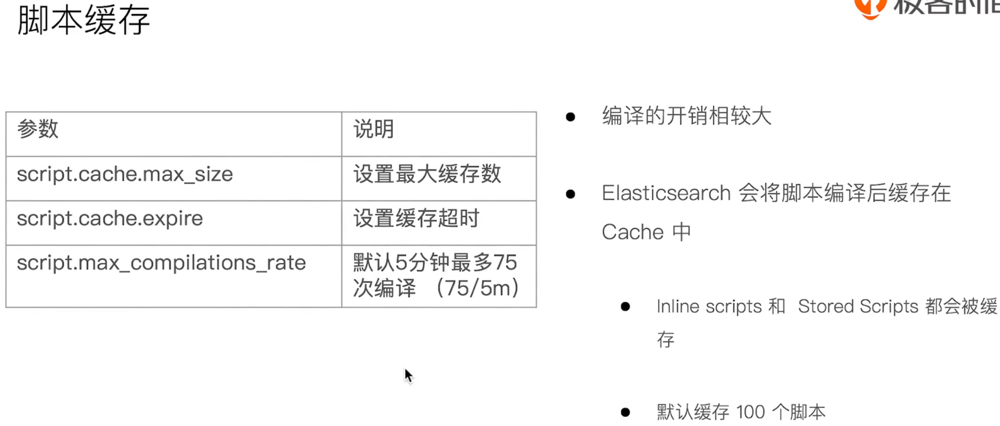
(53)数据建模实例与最佳实践
什么是数据建模？
数据建模（Data modeling），是创建数据模型的过程
- 数据模型是对真实世界进行抽象描述的一种工具和方法，实现对显示世界的映射
- 博客、作者、用户评论
- 三个过程：概念模型 => 逻辑模型 => 数据模型（第三范式）
- 数据模型：结合具体的数据库，在满足业务读写性能等需求的前提下，确定最终的定义
数据建模过程
数据建模过程：功能需求 + 性能需求
- 逻辑模型
- 实体属性
- 实体之间的关系
- 搜索相关的配置
- 物理模型
- 索引模板
- 分片的数量
- 索引的Mapping
- 字段配置：字段是否需要被搜索、字段是否需要被聚合
- 关系处理
- 索引模板
- 数据需求
- 索引与分配
- 文档
- 字段
建模步骤
确定字段类型 => 字段是否要搜索及分词 => 字段是否需要聚合及排序 => 字段是否需要额外的存储
字段类型：Text v.s Keyword
- Text
- 用于全文本字段，文本会被Analyzer分词
- 默认不支持聚合分析及排序。需要设置fielddata为true
- Keyword
- 用于id，枚举及不需要分词的文本。例如：电话号码，email地址，手机号码，邮政编码，性别等
- 适用于Filter（精确匹配），Sorting和Aggregations
- 设置多字段类型
- 默认会为文本类型设置成为text，并且设置一个keyword的子字段
- 在处理人类语言时，通过增加“英文”，“拼音”和“标准”分词器，提高搜索结构
字段类型：结构化数据
- 数值类型
- 尽量选择贴近的类型。例如可以用byte，就不要用long
- 枚举类型
- 设置为keyword。即便是数字，也应该设置成keyword，获取更好的性能
- 其它
- 日期、布尔、地理信息等
搜索角度
- 如果不需要检索，排序和聚合分析
- Enable设置成false
- 如果不需要检索
- Index设置成false
- 对需要检索的字段，可以通过如下配置，设定存储粒度
- Index options / Norms: 不需要归一化数据时，可以关闭
聚合及排序角度
- 如果不需要检索，排序和聚合分析
- Enable设置成false
- 如果不需要排序或者聚合分析功能
- Doc_values / fielddata 设置成false
- 更新频繁，聚合查询频繁的keyword类型的字段
- 推荐奖eager_global_ordinals设置成true。（利用缓存特性，提供Terms & Aggregations的性能）
额外存储角度
- 是否需要专门存储当前字段数据
- Store设置成true，可以存储该字段的原始内容
- 一般结合_source的enabled为false适合使用
- Disable _source 后 : 节约磁盘；适用于指标型数据
- 所以通常：一般建议先考虑增加压缩比
- 因为：无法看到 _source字段，无法做Reindex，无法做Update
一个数据建模的案例
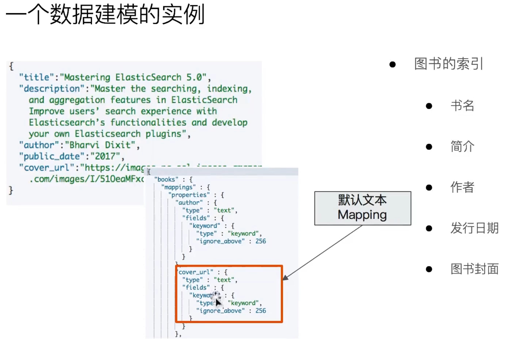
解释备注：
- 这是一个图书信息，包含：书名、简介、作者、发行日期、图书封面
- 默认Mapping的时候，会把“图书封面”设置成一个text类型，还加了一个子的字段keyword。
优化：
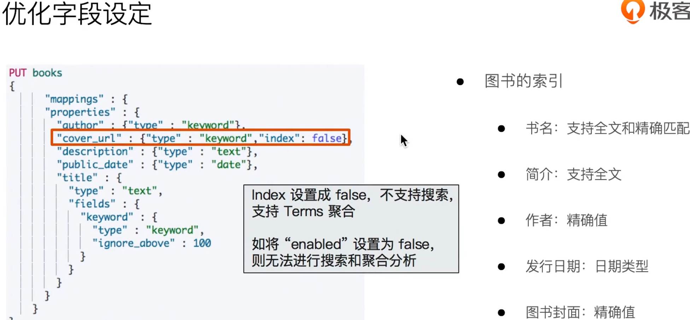
解释备注：
- “图书封面”一般不会去检索